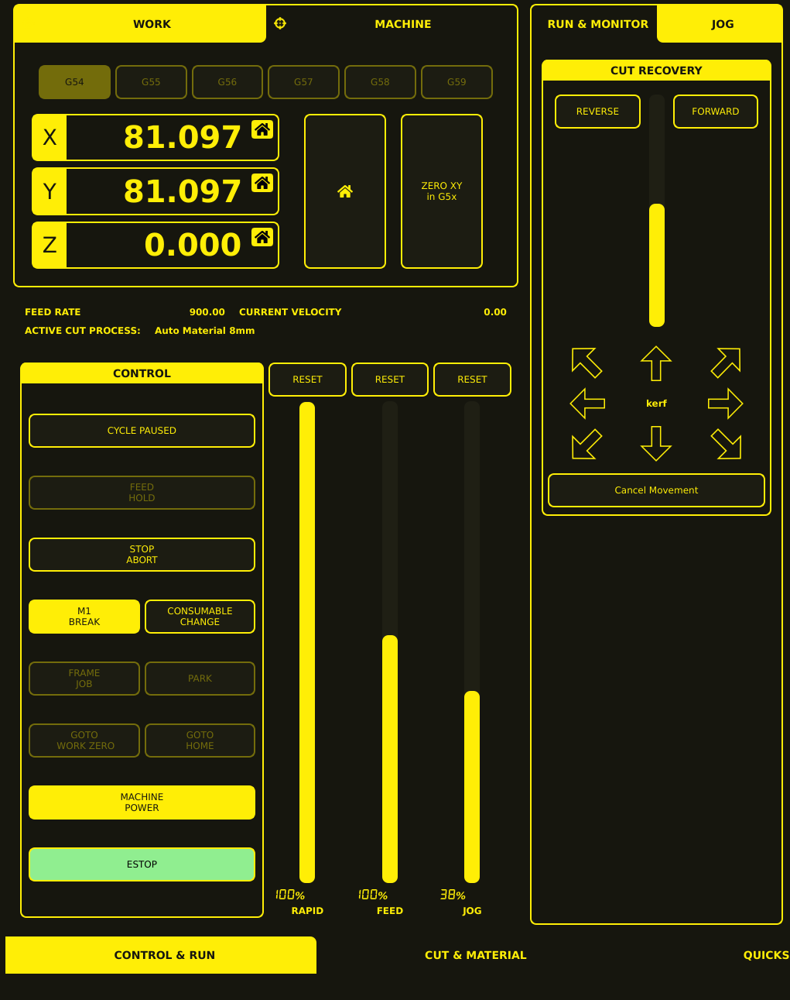

Cut Recovery
Cut Recovery allows you to manually reposition the torch after a cut has been interrupted (feed hold). This is essential for recovering from dropped arcs, voids, or operator errors without restarting the entire program.
Activating Cut Recovery
Interrupt the cut — Press FEED HOLD during a cut, or the cut may be interrupted by a void detection, arc loss, or other error.
Access Recovery controls — The Cut Recovery controls appear in the JOG tab on the right side of the interface when a cut is paused (display shows CYCLE PAUSED).
Reposition the torch — Use the recovery controls to move the torch back to the cut path.
Resume cutting — Press CYCLE START to resume from the recovery point.
Cut Recovery Controls

The Cut Recovery panel appears in the JOG tab (next to the RUN & MONITOR tab) and contains the following controls:
Control |
Description |
|---|---|
REVERSE |
Move backward through the cut-recovery sequence |
FORWARD |
Move forward through the cut-recovery sequence |
Vertical slider |
Adjustable recovery control positioned between REVERSE and FORWARD |
Directional arrows |
Eight arrows arranged around the central “kerf” label for repositioning in cardinal or diagonal directions |
Cancel Movement |
Cancels recovery movement |
Recovery Workflow
Standard Recovery
Cut is interrupted — Feed hold is active, machine is paused (display shows CYCLE PAUSED).
Assess the situation — Look at the VTK backplot to see where the cut stopped relative to the program path.
Access recovery controls — Open the JOG tab to reveal the Cut Recovery panel.
Reposition the torch — Use the directional arrows and REVERSE/FORWARD controls to move the torch to a point slightly before the interruption point (to re-establish the arc properly).
Verify position — Check the DRO values and VTK backplot to confirm position.
Resume — Press CYCLE START. The machine resumes cutting from the current position.
Recovery After Void Detection
When THC void detection retracts the torch:
Torch is at safe height — Void detection has already retracted Z.
Move XY to restart point — Use the recovery directional arrows to position over the cut path.
Lower Z — Manually jog Z down to cut height (or use the DRO touch-off).
Resume — Press CYCLE START.
Canceling Recovery
To cancel recovery movement without resuming:
Press Cancel Movement — This cancels the recovery movement request.
The program must be restarted from the beginning or from a specific line.